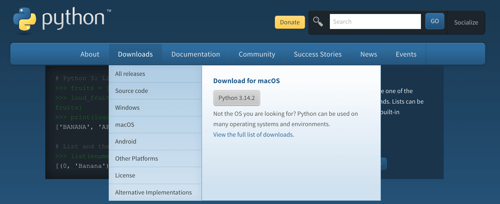
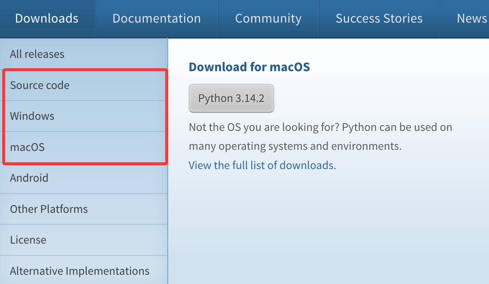
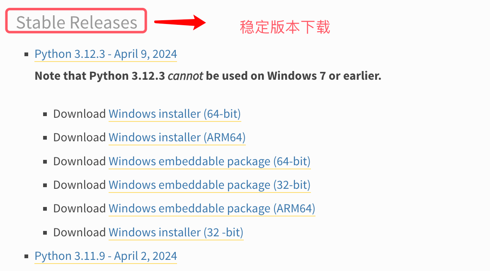
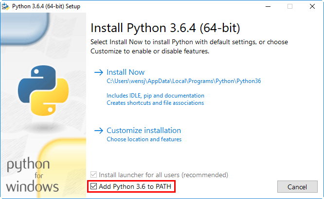
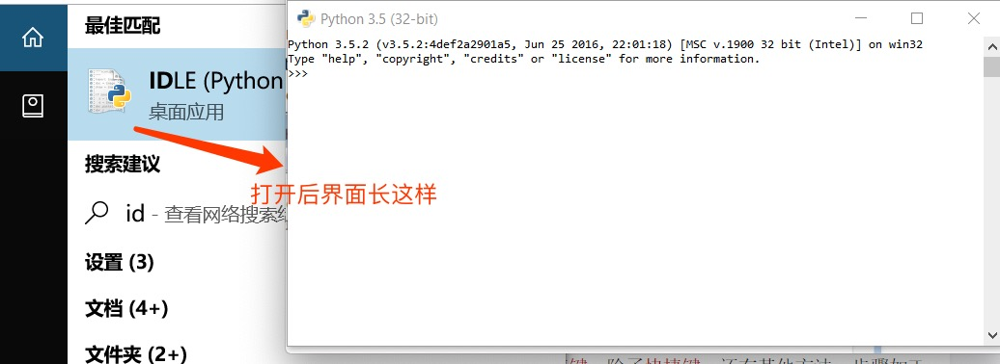
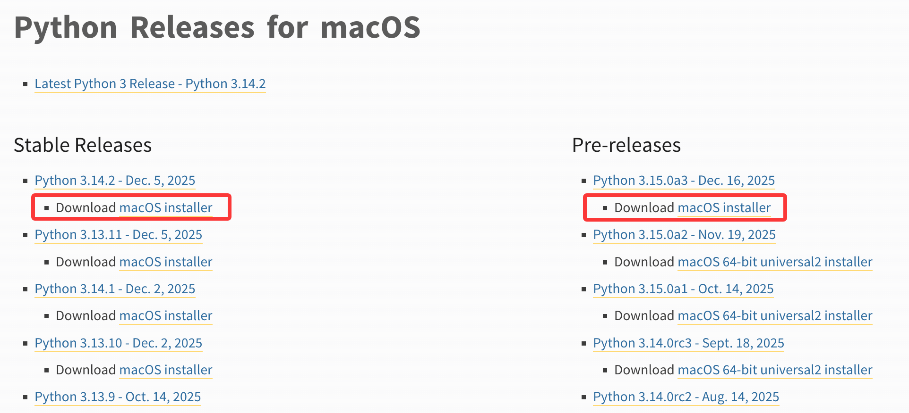
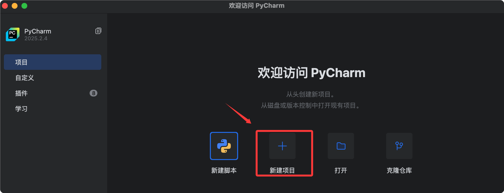

Python3 環境構築
Python3 は優れたクロスプラットフォーム互換性を持ち、Windows、Linux、Mac OS X の主要3大オペレーティングシステムで安定して動作するほか、以下のような他の多くのプラットフォームや環境もサポートしています：
- Unix 系（Solaris、Linux、FreeBSD、AIX、HP/UX、SunOS、IRIX など）
- 従来の Windows システム（9x/NT/2000）
- クラシック Macintosh システム（Intel、PPC、68K アーキテクチャ）
- その他の専用/ニッチなプラットフォーム（OS/2、多バージョンのDOS、PalmOS、Nokia 携帯電話、Windows CE、Acorn/RISC OS、BeOS、Amiga、VMS/OpenVMS、QNX、VxWorks、Psion）
さらに、Python は Java および .NET 仮想マシン環境にも移植して実行できます。
Python3 ダウンロード
Python3 の最新ソースコード、バイナリドキュメント、ニュースなどは Python 公式サイトで確認できます。
Python 公式サイト：https://www.python.org/

Python3 は完全な中国語ドキュメントを提供しています：https://docs.python.org/zh-cn/3/
Python インストール
Python は優れたクロスプラットフォーム互換性を備え、複数のOSへの移植対応が完了しており、Windows、macOS、Linux などの主要プラットフォームで安定して動作します。
対応するプラットフォームのバイナリインストールパッケージをダウンロードし、ビジュアルウィザードまたはコマンドラインで簡単にインストールを完了できます。これが最も便利で効率的なインストール方法です。
オペレーティングシステムに対応するバイナリインストールパッケージがない場合は、Python のソースコードを取得し、C コンパイラを使用して手動でコンパイルしてインストールできます。
バイナリパッケージのインストールと比較して、ソースコードからのコンパイルはより豊富な機能カスタマイズオプションを提供し、Python 環境の設定をより柔軟にします。
以下は各プラットフォームに対応する Python インストールパッケージのダウンロードアドレスです：

Source CodeLinux へのインストールに使用できます。
以下はさまざまなプラットフォームで Python3 をインストールする方法です。
Windows プラットフォームでの Python インストール:
以下は Windows プラットフォームで Python をインストールする簡単な手順です。
WEB ブラウザを開いてアクセスしますhttps://www.python.org/downloads/windows/ ：

これらのリンクは、さまざまな種類の Windows システムや利用シーンに適した、さまざまなタイプの Python インストールファイルを提供します：
-
Download Windows installer (64-bit)：64 ビット Windows システム用インストーラー。
-
Download Windows installer (ARM64)：ARM64 アーキテクチャの Windows デバイス向けインストーラー。
-
Download Windows embeddable package (64-bit)：64 ビット Windows システム用組み込みパッケージ。アプリケーションへの組み込みに使用できます。
-
Download Windows embeddable package (32-bit)：32 ビット Windows システム用組み込みパッケージ。同様にアプリケーションへの組み込みに使用できます。
-
Download Windows embeddable package (ARM64)：ARM64 アーキテクチャの Windows デバイス向け組み込みパッケージ。
-
Download Windows installer (32-bit)：32 ビット Windows システム用インストーラー。
忘れずにチェックを入れてくださいAdd Python 3.6 to PATH。

注意：チェックを入れなかった場合Add Python3.6 to PATH」、コマンドラインが認識できなくなり、python/python3コマンドは環境変数を手動で設定する必要があります。
按 Win+Rキー、cmd と入力してコマンドプロンプトを呼び出し、python と入力します:

スタートメニューで検索することもできますIDLE：

Unix & Linux プラットフォームでの Python3 インストール
Linux の多くのディストリビューションには Python3 が標準搭載されていますインストールされていない場合やアップグレードが必要な場合は、パッケージマネージャーでインストールできます。
ソースコードからのインストール
以下は Unix & Linux プラットフォームで Python をインストールする簡単な手順です：
- WEB ブラウザを開いてアクセスしますhttps://www.python.org/downloads/source/
- Unix/Linux 対応のソースコード圧縮パッケージを選択します。
- 圧縮パッケージをダウンロードして解凍しますPython-3.x.x.tgz，3.x.xダウンロードしたファイルに対応するバージョン番号に置き換えます。
- いくつかのオプションをカスタマイズして変更する必要がある場合はModules/Setup
以 Python3.6.1バージョンを例とします：
# tar -zxvf Python-3.6.1.tgz # cd Python-3.6.1 # ./configure # make && make install
Ubuntu/Debian
ターミナルを開き、以下のコマンドを実行します：
# 更新软件源 sudo apt update # 安装Python3及pip3（Python包管理工具） sudo apt install python3 python3-pip -y
CentOS/RHEL
ターミナルを開き、以下のコマンドを実行します：
# CentOS 7 sudo yum install epel-release -y sudo yum install python3 python3-pip -y # CentOS 8/RHEL 8 sudo dnf install python3 python3-pip -y
Python3 が正常に使用できるか確認します：
# python3 -V Python 3.6.1
Mac プラットフォームでの Python インストール:
Mac システムには Python 環境が標準装備されています。リンクhttps://www.python.org/downloads/mac-osx/から最新版をダウンロードしてインストールできます。

ソースコードからのインストール方法を参考にすることもできます。
Python3 環境が正常にインストールされたか確認する
Python3 のバージョンを確認するには、コマンドプロンプト（Windows）またはターミナル（macOS/Linux）を開き、次のコマンドを実行します：
# 通用命令（推荐，所有系统兼容） python3 --version # 补充：Windows系统若已配置PATH，也可执行 python --version
Python 3.11.4 に似た情報が出力されれば、Python3 のインストールは成功です。
pip3（Python パッケージ管理ツール）の確認。pip3 は Python3 のデフォルトのパッケージ管理ツールで、サードパーティ製ライブラリのインストールに使用されます。確認コマンド：
# 通用命令 pip3 --version # Windows补充命令 pip --version
pip 23.1.2 from xxx (python 3.11) に似た情報が出力されれば、pip3 は使用可能です。
環境変数の設定
もし上記のpythonコマンドの実行が成功したら、環境設定は完了しているので、追加設定は不要です。この部分の内容は無視して構いません。
プログラムの実行ファイルの保存ディレクトリは、システムのデフォルトの検索パスに含まれないことがよくあります。システムの PATH 環境変数（Unix では大文字と小文字を区別、Windows では区別しない）は、実行ファイルの検索パスを格納するために使用されます。
Mac OS でデフォルト以外のディレクトリから Python を参照する必要がある場合は、Python のインストールディレクトリを手動で PATH に追加する必要があります。
Unix/Linux で環境変数を設定する
注： /usr/local/bin/pythonは Python のインストールディレクトリです。実際のパスに置き換える必要があります。
bash shell（Linux）：
export PATH="$PATH:/usr/local/bin/python"
csh shell：
setenv PATH "$PATH:/usr/local/bin/python"
sh/ksh shell：
PATH="$PATH:/usr/local/bin/python"
Windows で環境変数を設定する
Python3 のインストール時にチェックを入れなかった場合Add Python.exe to PATH、コマンドラインが認識できなくなり、python/python3コマンドは環境変数を手動で設定する必要があります：
- Python3 のインストールパス（例：D:\Python311、C:\Program Files\Python311）を見つけ、その下の Scripts フォルダー（パス例：D:\Python311\Scripts、pip3 が配置されているディレクトリ）も見つけます。
- 「PC」を右クリック→「プロパティ」→「システムの詳細設定」→「環境変数」。
- 「ユーザー環境変数」または「システム環境変数」で Path 変数を見つけ、ダブルクリックして編集します。
- 「新規」をクリックし、Python3 のインストールルートパスと Scripts フォルダーのパスをそれぞれ追加し、「OK」をクリックしてすべての設定を保存します。

より詳細な設定内容はこちらを参照：https://www.runoob.com/w3cnote/add-python-to-path-on-windows-11.html
元のコマンドプロンプトを閉じ、再度開いて検証コマンドを実行すると有効になります。
以下は Python に適用されるいくつかの環境変数の説明です：
| 環境変数名 | 主な役割 |
|---|---|
PATH |
システムが Python インタープリターおよび実行ファイルを検索するパス |
PYTHONPATH |
Python がサードパーティ製ライブラリとカスタムモジュールを検索するパス |
PYTHONHOME |
Python のインストールルートディレクトリを指定し、インタープリターにコアライブラリ/標準ライブラリの場所を伝えます |
PYTHONSTARTUP |
Python 対話型インタープリター起動時に自動実行されるスクリプトファイルのパスを指定します |
PYTHONCASEOK |
Windows 専用。Python がモジュールをインポートする際に大文字小文字を無視します |
PYTHONDONTWRITEBYTECODE |
Python 実行時の生成を禁止.pyc / .pyoバイトコードキャッシュファイル |
Python を実行する
Python を実行するには3つの方法があります：
1、対話型インタープリター：
コマンドラインウィンドウから Python を起動し、対話型インタープリターで Python コードの記述を始めることができます。
Unix、DOS、またはコマンドラインやシェルを提供するその他の任意のシステムでPythonのコーディング作業を行うことができます。
python
Python コマンドライン引数は以下のとおりです：
| オプション | 説明 |
|---|---|
| -d | デバッグモードを有効にし、コードの解析時およびインタープリター実行時に詳細なデバッグ情報を表示します。 |
| -O | 最適化コードを生成し、スクリプトのコンパイル時に .pyo 最適化バイトコードファイルを生成します（アサーション文などのデバッグ関連コードは無視されます）。 |
| -OO | コードをさらに最適化し、.pyo ファイルを生成してコード内のすべてのdocstringを削除し、ファイルサイズをさらに小さくします。 |
| -S | Python 起動時に site モジュールを自動的にインポートしません。つまり、Python モジュールのパスを検索する関連設定（site-packages ディレクトリなど）を読み込みません。 |
| -V / --version | 現在インストールされている Python のバージョン番号を出力し、インタープリターを直接終了します。 |
| -vv | 詳細なバージョン情報（コンパイル環境、依存ライブラリなどの追加情報を含む）を出力します。 |
| -X | Python 1.6 以降、組み込みの例外（文字列型のみに使用）に基づく用法は非推奨です。この引数は旧バージョンの関連機能との互換性のために使用されます。 |
| -h / --help | すべての Python コマンドライン引数の完全なヘルプを表示し、インタープリターを直接終了します。 |
| -c cmd | コマンドラインで指定した Python コード断片（cmd は文字列形式のコード）を直接実行します。.py スクリプトファイルを記述する必要はありません。 |
| -m module | 指定した Python モジュール（pip、http.server など）をモジュールとして実行します。モジュールパスを自動的に検索して実行します。 |
| -i | 指定した Python スクリプトの実行後、自動的に対話型インタープリター環境に入り、その後のデバッグやコードの追加実行に便利です。 |
| -b | バイト列（bytes）と文字列（str）の互換性のない比較操作を検出した場合、警告メッセージを発行します。 |
| -bb | バイト列（bytes）と文字列（str）の互換性のない比較操作を検出した場合、エラーを直接スローしてプログラムの実行を終了します。 |
| -u | 標準出力（stdout）と標準エラー（stderr）のバッファリング機構を無効にし、ログや出力内容をリアルタイムで表示します。 |
| file | 実行する Python スクリプトファイルのパス（絶対パスまたは相対パス）を指定します。インタープリターはそのファイル内のコードを読み込んで実行します。 |
| -q | 対話型インタープリターに入るとき、ウェルカムメッセージを非表示にし、コマンドプロンプトを直接表示します。 |
2、コマンドラインスクリプト
アプリケーション内でインタープリターを呼び出すことで、コマンドラインで Python スクリプトを実行できます。次のようにします：
python script.py
注意：スクリプトを実行する際は、スクリプトに実行権限があるかどうかを確認してください。
3、統合開発環境（IDE：Integrated Development Environment）: PyCharm
PyCharm は JetBrains が開発した Python IDE で、macOS、Windows、Linux システムをサポートしています。
PyCharm の機能：デバッグ、シンタックスハイライト、プロジェクト管理、コードジャンプ、スマートヒント、自動補完、ユニットテスト、バージョン管理……
PyCharm ダウンロード先：https://www.jetbrains.com/pycharm/download/
PyCharm インストール先：https://www.runoob.com/pycharm/pycharm-install.html
PyCharm 画面：

その他の必須ツール
Anaconda 統合環境
一つのデータサイエンスと機械学習向けのPython 統合ディストリビューションで、以下を内蔵しています：
- Python インタープリター
- 一般的なデータサイエンスライブラリ（NumPy / Pandas / Matplotlib など）
- 環境およびパッケージ管理ツール
conda
比較すると、pip，conda の方がマルチ環境の切り替えに適しており、データサイエンスのシナリオでより安定しています。
インストールと使用法：Anaconda チュートリアル
uvPython パッケージと環境管理ツール
uvAstral 社によって開発され、Rust に基づいて構築された高速 Python ツールチェーンです。
- 高性能：pip と比較して 10〜100 倍の高速化
- 依存関係管理
- 仮想環境管理
- Python バージョン管理
置き換え可能な、pip、virtualenv、pip-toolsなどのツールの統合ソリューション
インストールと使用法：uv チュートリアル
Jupyter Notebook対話型計算ツール
一つのWeb ベースの対話型プログラミング環境であり、学習・実験・データ分析に適しています。
- コードを実行して結果をリアルタイムで確認できます
- データ可視化チャートを表示できます
- Markdown ドキュメントの説明を記述できます
- 数式（LaTeX）をサポートします
Notebook ファイルは JSON 形式で、複数の Cell から構成され、コードとドキュメント内容を混在させることができます。
インストールと使用法：Jupyter Notebook チュートリアル
2048
cui***e1994@qq.com
対話型 ipython を使用して Python を実行する
ipython は Python の対話型シェルであり、デフォルトの Python シェルよりもはるかに使いやすく、変数の自動補完、自動インデント、bash シェルコマンドのサポートを備え、多くの便利な機能と関数が組み込まれています。
この ipython の i は「対話 (interaction)」を意味します。
公式サイト：https://ipython.org/install.html
インストール：
Linux 環境では以下のコマンドでもインストールできます：
使用方法：
2048
cui***e1994@qq.com
COnlin
143***6952@qq.com
cygwin エミュレーターに python3 をインストールする方法
Cygwin は Windows プラットフォーム上で動作する UNIX 風のエミュレーション環境であり、cygnus solutions 社が開発したフリーソフトウェアです（同社が開発した有名なツールには eCos もありますが、現在は Redhat に買収されています）。UNIX/Linux 操作環境の学習、UNIX から Windows へのアプリケーション移植、または特定の開発作業、特に GNU ツールセットを使用した Windows 上での組み込みシステム開発に非常に役立ちます。
cygwin のインストール：
1. 実行可能ファイルをダウンロードhttp://www.cygwin.com/setup-x86.exe
2. "Install from internet" を選択し、[Next] をクリックします。
3. ルートディレクトリ C:\cygwin（他のディレクトリ、特にスペースを含むディレクトリ名は推奨しません）。 4. ダウンロードサイトを選択します。http://sourceware.mirror.tds.net からのダウンロードが安定しています。 5. "Select Packages" メニューで "Category" を選択し、以下のパッケージを追加します。6. [Next] をクリックして、インストールを開始します。7. ファイル moshell/examples/cygwin_install/cygwin_install.txt を C:/Cygwin にコピーします（このアドレスからもダウンロードできます：http://newtran01.au.ao.ericsson.se/moshell/cygwin_install.txt）。
8. Windows で [スタート] –> [ファイル名を指定して実行] をクリックします。
"ファイル名を指定して実行" ウィンドウで cmd と入力し、Enter キーを押します。
DOS ウィンドウを開き、DOS ウィンドウで以下のコマンドを実行します：
python3 をインストールする
検証：
COnlin
143***6952@qq.com
雷雷
139***68707@163.com
参考アドレス
mac で py3 をインストール（優秀なプログラマーなら必ず mac を用意すべき）
1. brew をインストール/更新 [brew を知らない人はクリックして確認](https://brew.sh/index_zh-cn)
2. py3 をインストール
3. mac は xcode インストール時にデフォルトで python2 がインストールされるため、設定を変更する必要があります
（なぜ python2 を削除しないのかというと、私が小心者だからです。なぜ python2 を使わないのかというと、新しいバージョンが好きだからです）
設定ファイルを開く
設定情報を追加します（以下は私の設定情報です。パスは自分で変更してください）
ファイル情報をリフレッシュします（リフレッシュしないとすぐには反映されません）
py のバージョンを確認
もう一つ開発ツールとして vscode をおすすめします [公式ダウンロード先](https://code.visualstudio.com/ )
利点：強力、オープンソース、無料（非常に重要）、プラグインが豊富
雷雷
139***68707@163.com
参考アドレス